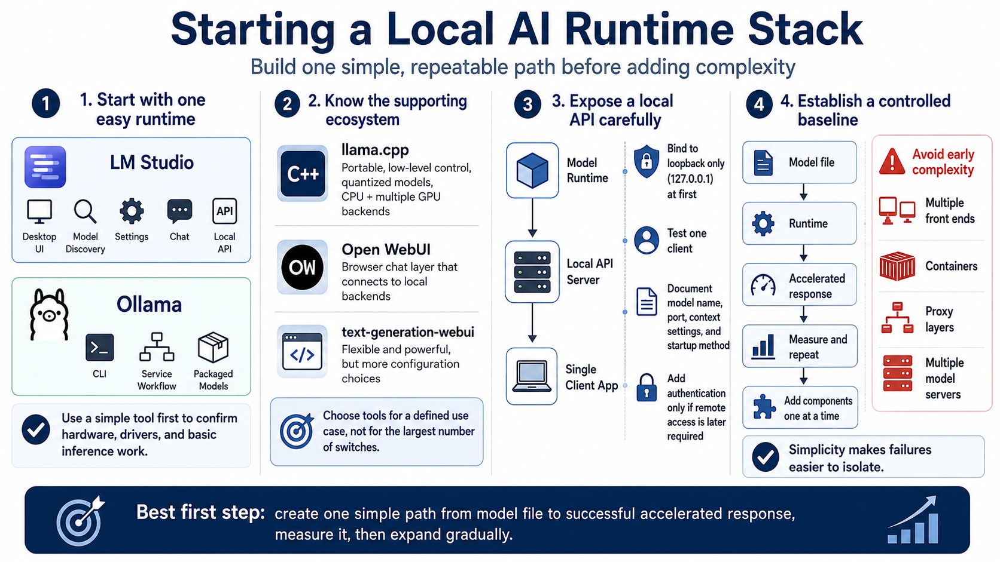

Installing Local AI Runtimes
Connecting to LMS... Progress: in progress

Narration
Begin with one runtime that makes the first useful workload easy. LM Studio provides a desktop interface for discovering compatible models, adjusting settings, chatting, and exposing a local API. Ollama emphasizes a simple command-line and service workflow with packaged model definitions. Both can reduce setup friction and help confirm that the hardware and driver stack work before additional components are introduced.
Llama.cpp is a foundational, highly portable inference project with extensive control over quantized models, CPU execution, and several GPU backends. It is useful when you need explicit tuning or want to understand the underlying inference options. Open WebUI adds a browser-based conversation layer and can connect to backends such as Ollama or compatible local API servers. Text-generation-webui offers a broad set of loaders and controls, but its flexibility also creates more configuration choices. Select a tool because it supports a defined use case, not because it exposes the largest number of switches.
Local API servers allow editors, scripts, retrieval systems, and other applications to call the model through a consistent interface. Start by binding the service to the loopback address so only the workstation can reach it. Test a single client, confirm authentication options if remote access is later required, and document the model name, port, context settings, and startup method.
Avoid unnecessary orchestration during the first pass. Multiple front ends, containers, proxy layers, and model servers make failures harder to isolate. Establish a simple path from model file to successful accelerated response. Once that path is measured and repeatable, add interfaces or automation one component at a time. Simplicity at the beginning is not a limitation; it is a controlled baseline for everything that follows.